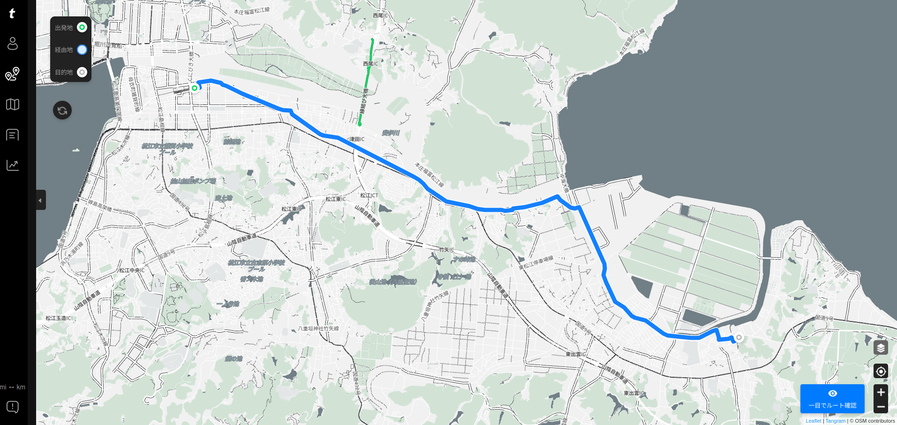
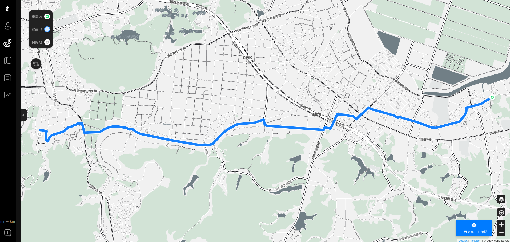

意宇六社を巡るサイクリング（八雲立つ風土記の丘 遺跡めぐり 2）

前回に続いて八雲立つ風土記の丘を巡るサイクリング。 といっても，今回は遺跡ではなく意宇六社1 のうち揖夜神社と神魂神社へ行こうかと。 分かりやすいランドマークからね。
松江駅 → 揖夜神社
揖夜神社のある
というわけで，今回はサイクルコンピュータのナビさんに揖夜神社まで案内してもらうことにした。 出発点は松江駅東駐輪場（松江駅方面に用事があったので）。

コースはナビさんにおまかせで決めてもらった。 こんな感じ。

{kind=link}
trimm Center
相変わらず幹線道路（国道9号線など）を避けて裏道を通ろうとしているが，今回は概ね妥当なルートで，10kmほどの道のり。 やっぱ，うちのナビさんは街中より郊外のほうが得意のようだ。 一部「それ私道やろ？」ってな道も走らされたけどね。 私道はマジやばいから止めてほしい。
揖夜神社
というわけで，のんびり走って40分ほどで揖夜神社に到着。
駐輪場はなし。 しょうがないので駐車場の隅っこに停めさせてもらった。
さっそくお参り。
奥の方にお稲荷さんを見つけたので，こっちにもお参り。
あっ。 蝶々発見（ツマグロヒョウモン？）
揖夜神社は現在遷宮の真っ最中で2025年に正遷座祭を行うらしい。 看板に寄進がどうたらとか書いてあった気がするが，私は別に氏子というわけでもないし「興味ないね」。
揖夜神社 → 神魂神社
次は神魂神社に行ってみよう。 これもナビさんにルートを指示してもらう（揖夜神社から神魂神社 一の鳥居まで）。 こんな感じ。

{kind=link}
trimm Center
このコースだと7kmほど。 一見よさげだったんだけどねぇ。 なかなかの曲者だった。
まず，国道9号線を横切る出雲郷東の交差点。 歩行者&自転車用の横断歩道がない。 どうするかというと歩道陸橋を自転車を押して渡る必要がある。
しかも交差点過ぎてすぐに右折しないといけないんだけど，自転車では右折できないのよ。 しょうがないので交差点の陸橋で右側の歩道に降りて行きましたよ。 とほほ
このまままっすぐ行けばよかったのに，何故か途中で田んぼのあぜ道をチョイスするという暴挙に出たナビさん。 あぜ道というか，車の轍部分に砂利が敷き詰められてて走りにくいのなんの。 ウチの自転車はグラベル寄りの構成だけどグラベル用じゃないの！ またパンクしたらどーすんだ！
いまさらルートを変更するのもナニなので，そのまま砂利を避けておっかなびっくり進んだら，前回も行った岩屋後古墳に出た。
あぁ，ここに出るのか。
マジ勘弁してください orz
ここからは知ってる道でもあるので，特に迷うこともなく神魂神社に到着した。 揖夜神社から30分ほど。 のんびりしてるなぁ（笑）
神魂神社
どうにか一の鳥居まで到着。
でも，一の鳥居付近には自動車や自転車を停めるところがなかった。 しょうがないので少し先にある参拝者用の駐車場まで移動して隅っこのほうに自転車を停め，また一の鳥居まで戻って仕切り直し。
これって桜の木だよなぁ。 春頃にまた来よう。
ほんじゃあ，お参りすっか。
んー。 子どもの頃の記憶と微妙に齟齬があるなぁ。 観光地として整備されたから？ まぁいいや。
風土記の丘 展示学習館まで戻って休憩
揖夜神社は境内にベンチがあって休めるようになってたけど，神魂神社は境内にもその周辺にも休めそうな場所がなかったので，風土記の丘 展示学習館まで戻ることにした。
ところで前回，展示学習館に駐輪場が見当たらないと書いたが，一般駐車場の一角が駐輪スペースになっていた。
見落としてたよ orz 次からはここに停めよう。
展示学習館の敷地でしばらく休憩。 敷地内は親子連れが遊んだりしていて，長閑でよい。
今回は途中で食事ができるお店が見当たらなかったので，コンビニでプロティンバーとかカロリーメイト（フルーツ味）とか買い漁ったのだが，ここでほぼ消費してしまった。
でも，糖分が足りない気がする。 よし，コメダへ行こう。
糖分補給
というわけで今日もコメダで糖分補給。
30分ほど休憩してから，日が落ちる前に帰宅。 今日は曇りで夕日は見れそうもなかったので寄り道なし。
さて，次回は…
今回は，ナビさんと走ったルートを含めて，合計30kmほどのサイクリングだった。 やっぱこのくらいが今の私の筋力・体力・持久力では限界なんだろうな。 あと，郊外を走るときは糖分補給についてちゃんと考えないと。 都合よく飲食店や喫茶店はないだろうし。
とにかくこれで意宇六社のうち熊野大社以外は自転車で参拝済みとなった。 熊野大社がこれまた（私にとっては）ちょっと遠いんだよなぁ。 チャレンジするなら計画を練らないと。
ブックマーク
参考

- trimm ROLLIN サイクルコンピュータ GPS 自転車 速度計 ワイヤレス ナビゲーション ANT+センサー対応 Bluetooth 心拍数 高度計 2.7インチ スピードセンサー(device only)
- Trimm
- B0BLNFPWTQ (ASIN), 8809748020286 (EAN)
- 評価
韓国企業だけどモノは made in Chaina って書いてあった。ナビ機能付きで2万円以下というのは安い。スマホアプリと連携させて操作する。モノクロ液晶だがバッテリ消費は少なめ。各種センサーやスマートウォッチと連携可能。

- GARMIN(ガーミン) vívosmart 5 Black S/M バンド型スマートウォッチ 心拍計【日本正規品】
- ガーミン(GARMIN) (Release 2022-04-21)
- エレクトロニクス
- B09XGYX7JF (ASIN), 0753759301590 (EAN), 753759301590 (UPC)
- 評価
サイクルコンピュータと Bluetooth または ANT+ で連携可能なスマートバンド（活動量計）として購入。 Garmin 製なのに自前では GPS 機能がない（スマホの GPS 機能と組み合わせて使う）。活動量計としての機能は十分というかありすぎる（笑）

- ミニサイズ Shokz OpenRun Mini 骨伝導イヤホン 公式ストア正規品 ワイヤレス 急速充電 驚きの通話品質 IP67防塵防水 bluetooth5.1 2 30日間返品無料 コズミックブラック
- Shenzhen Shokz Co., Ltd.
- エレクトロニクス
- B09TVLHJ1X (ASIN), 4512223694288 (EAN)
- 評価
以前のものはマルチファンクションキーが利かなくなったので Black Friday の安売りのタイミングで買い替え。私のように頭の小さい人向け（笑） 値段並みの音質はある，と思う。耳が自由って素晴らしい。

- Canon コンパクトデジタルカメラ PowerShot ZOOM 写真と動画が撮れる望遠鏡 PSZOOM
- キヤノン (Release 2020-12-10)
- エレクトロニクス
- B08L4WKDZ7 (ASIN), 4549292179675 (EAN)
- 評価
望遠鏡型コンパクトデジカメ。メモリと充電器（要 Power Delivery）は別に用意する必要がある。使い勝手はまぁまぁ。

- マルニ(Maruni) クイックショット K-600 仏式バルブ用応急瞬間パンク修理剤 ブラック
- マルニ(Maruni)
- スポーツ用品
- B00AAPY0ZQ (ASIN), 4907388003301 (EAN)
- 評価
転ばぬ先の杖として購入。緊急用のパンク修理剤。フレンチバルブ対応。コンパクトサイズでサドルバッグやステムバッグにも入る。1mm以下の小さな穴なら対応可能らしい。使用方法は本体に書いてある。1本でチューブ1本分のガスも供給できるので，そのまま低速で5,6km程度なら走行可能だった。チューブレスにも対応と書いてあるが，それはちょっと... 50km以上の中長距離ライドには不向きと思われる。

- [FAIRWEATHER(フェアウェザー)] stem bag x-pac/coyote
- FAIRWEATHER(フェアウェザー)
- B08K34WLXD (ASIN)
- 評価
スポーツサイクルのステム部分に取り付けられる小物入れ。防水仕様。底に小さなハトメ穴が空いていて，万一水が入った場合でも排出できるようになっている。

- [クローム] メッセンジャーバッグ SIMPLE MESSENGER/シンプル メッセンジャー BLACK (現行モデル) 12L 防水 メンズ
- CHROME(クローム)
- ウェア&シューズ
- B08P54PQDB (ASIN), 0841916163973 (EAN), 841916163973 (UPC)
- 評価
プライベートお出かけ用。たまたま安売りの時に購入できた。チャリンコ乗ってても背中がゆさゆさしない。大きすぎず丁度いいサイズ。鞄の蓋がマジックテープでちょっと煩いのが玉に瑕だが，概ね満足。

- アークレイ株式会社 グルコレスキュー (ブドウ糖補給ゼリー) 25g×5包 2箱セット
- アークレイ株式会社
- B06XDPTLDD (ASIN), 4573189972315 (EAN), 4987486118541 (EAN)
- 評価
低血糖になった場合の緊急措置用に購入。仕事用鞄とプライベート用鞄に忍ばせている。ちょっとお世話になった。ゼリー状で摂りやすい。転ばぬ先の杖。

- VAAM(ヴァーム) 明治 ヴァーム(VAAM) アスリート 顆粒 栄養ドリンク風味 4.7g×10袋
- 明治 (Release 2021-03-16)
- ヘルスケア&ケア用品
- B08VMWL13F (ASIN), 4902705035614 (EAN)
- 評価
運動時に脂肪をエネルギーに変えやすくする働きがあるらしい。お試しで買ってみた。とりあえず1時間以上自転車に乗る場合に服用している。水に溶かさず飲むと書いてあるが，水と一緒に飲まないと大変なことになるので注意（経験済み）

- エルの唄～メリナ Full ver.～
- 村川梨衣 (メインアーティスト)
- WFRecords 2021-06-23 (Release 2021-06-23)
- MP3 ダウンロード
- B0964KPJ24 (ASIN)
- 評価
ゲーム「アナザーエデン」の挿入歌。「アナザーエデン」の中でも好きなエピソード。